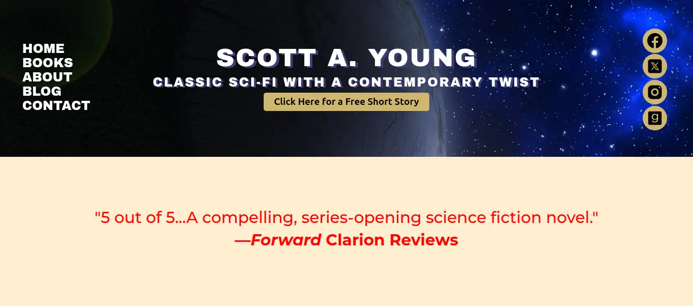

Scott A. Young Website
For this project, I worked with a client to create a full-stack web application to advertise his new book. I worked with React on the front-end, and used PHP for the back-end code.
Live SiteFor this project, I worked with a client to create a full-stack web application to advertise his new book. I worked with React on the front-end, and used PHP for the back-end code.
Live SiteFor this project, I created a portfolio website in NextJS. There is a lot of functionality inculding a contact form, several links to my social media pages, and a download for my resume. I'm especially happy with the gradient borders I was able to create.
Live SiteThis is another project I developed using NextJS. The goal of this project was to create a chess game that could be played against a chess engine in the browser. After I had got the chess game itself worked out, I lost intrest in the rest of the functionality I had originally wanted, but I still think it's in a pretty good state.
GitHubThis is a project I did during undergrad for my Programming Languages course. The final project was to create a project in a language that I didn't know, so I chose Rust because I had heard a lot of great things about the language and it intrigued me. The project has two main pieces. The first is a backend that handles all the game logic, and the second is a front-end to handle displaying the information in the browser. At the time I had very little experience with CSS and if I went back to this I would style it better.
GitHubThis is a project that I completed for my Artificial Intelligence class in undergrad. The Assignment was to create multiple different AI algorithms in Python to solve the 8 Queens Problem. The 8 Queens problem involves finding a position for 8 Queens on a chess board where they do not attack each other. The image shows the initial prompt and a small portion of a solution done by one of the algorithms.
GitHub